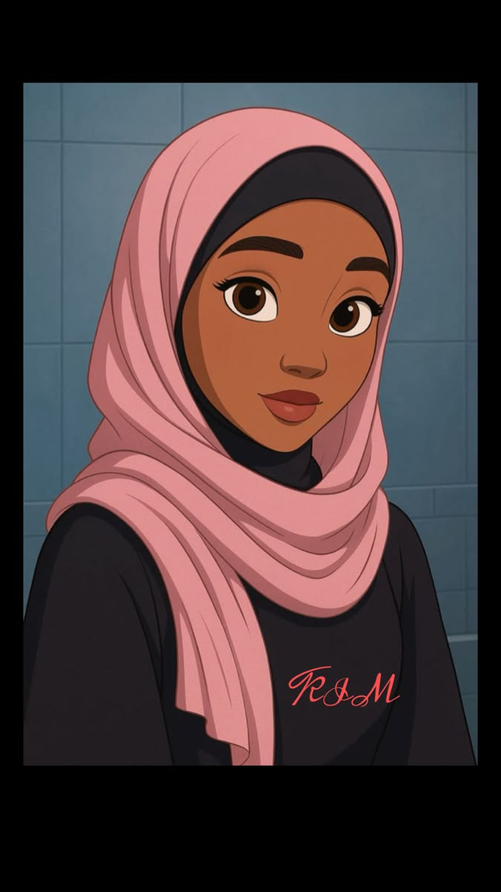

HTML5

widade.ndiaye@gmail.com
+221 77 123 45 67
Dakar, Sénégal
20 ans
www.widadendiaye.com
Passionné par le développement web et les nouvelles technologies.
J 'aime créer des sites web
modernes, rapides et acccesible.
Toujours curieux d'apprendre et de relever de nouveaux défis.
HTML5
CSS3
JavaScript
Bootstrap
VS Code
Je suis étudiante en informatique et développeuse web en formation.
J'ai des connaissances
en
HTML,
CSS,JavaScript et j'apprends chaque jour pour devenir une meilleure développeuse.